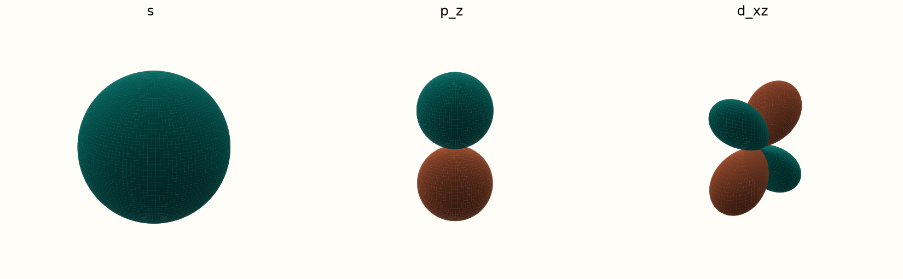
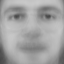
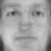
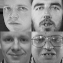
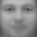
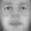
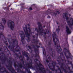
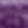

positive amplitude negative amplitude
Angular amplitude surfaces only: r ∝ |Y(θ, φ)|. Radial structure omitted.
The question behind PCA
Can a small number of patterns describe most of the variation in a dataset?
image ≈ mean + weighted modes


3 PCs · 30 PCs · 300 PCs
01 · Recognize the idea
Atomic orbitals give us a familiar example of distinct spatial patterns.

positive amplitude negative amplitude
Angular amplitude surfaces only: r ∝ |Y(θ, φ)|. Radial structure omitted.
Physical modes come from a physical model. PCA modes come from data.
01 · Recognize the idea
Adjust three amplitudes. Their sum changes the shape of the string.
Fixed ends · ideal string · displacement in arbitrary units
A mode is a pattern; an amplitude says how much of it to use.
01 · From physical patterns to learned patterns
Flatten each image into a row. Learn shared directions from the training rows.


Eigenfaces = principal directions, reshaped into images.
Blue: negative weight · white: zero · red: positive weight. One shared scale.
PCA learns pixel combinations, without asking who the person is.
02 · Three different quantities
Direction v
one shared pattern
Score z
one image's coefficient
Eigenvalue λ
variance of training scores
02 · Keep a subset

“Important” here means explaining variance, not guaranteeing recognition.
03 · The whole route
One training dataset. One saved mean. One shared basis.
Rows = samples · columns = features · Vk stores k unit directions as rows.
If you scaled features first, undo that scaling after reconstruction.
03 · Step 1
Xc = X − μ
Feature-wise z-scores from Week 5.
Divide by 255, then subtract the training mean image.
Scaling is a modeling choice; centering and unit-length directions are different operations.
03 · Before the matrix formula
Compare directions of length 1.
A longer arrow would inflate the variance.
PCA chooses directions that preserve the most training variance.
03 · Step 2
C = XcᵀXc / (n − 1)
Xc: (n,d) → C: (d,d)
Diagonal: variance · off-diagonal: covariance
03 · Step 3
Cvj = λjvj
Var(Xcvj) = λj
Unit vj · sample variance (ddof=1)
Arrow lengths in the plot show √λ.
Eigenvalues measure variance here. They are not entropy.
03 · Step 4
λ₁ ≥ λ₂ ≥ ⋯ ≥ 0
retained variance = Σj≤k λj / Σj λj
A useful summary of spread, not a classification score.
03 · Step 5
Z = XcVkᵀ
(n,d) @ (d,k) → (n,k)
Every sample gets its own scores.
The mean and basis stay shared.
03 · Step 6
X̂ = ZVk + μ
(n,k) @ (k,d) → (n,d)
● original · ○ reconstructed
Dashed segments: discarded variation.
For scaled data, undo the saved scaling too.
04 · Our course destination


More PCs cannot recover details already lost during resizing.
04 · Turn the idea into code
center(X, mean=None)
covariance_matrix(Xc)
variance_along_direction(Xc, v)Project · reconstruct · measure error
PCA object · 3D scores · image reconstruction
No. It means the largest training score variance; predictive value needs evaluation.
No. Reuse the training mean and basis.
Multiplying a direction by a scales its score variance by a².
← → navigate · N teacher notes · sliders keep their own arrow-key controls